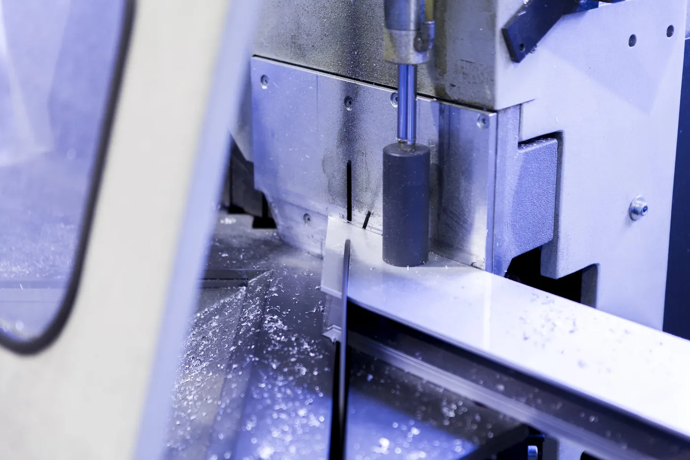
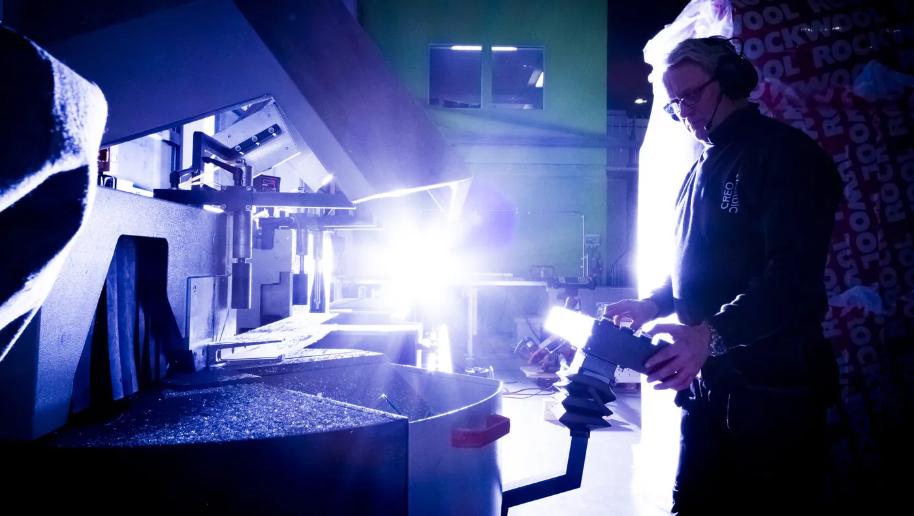

Forside/Produkter
Produkter
Glassvegger, skillevegger, himlinger, belysning og akustikkløsninger – med in-house produksjon på Bjelland.
01 / Glassvegger
Lys og rom samtidig
Glassvegger deler rommet uten å stenge lyset ute. Systemene tilpasses byggets mål og bruk.
- Systemer for kontor og næringsbygg.
- Glass, aluminium og stål.
- Tilpasset prosjektet.


02 / Skillevegger
Soneinndeling som fungerer
Skillevegger lager soner i åpne landskap, uten å bygge tunge vegger.
- Skille mellom arbeidssoner.
- Kombinerbart med glass og akustikk.
- Leveres med montering.
03–05 / Himling, lys og akustikk
Det som gjør rommet brukbart
Himlinger, belysning og akustikk henger sammen. Vi leverer dem som én løsning.
| Område | Hva det løser |
|---|---|
| Himlinger | Systemer for å skjule tekniske føringer og gi et ryddig tak. |
| Belysning | Integrert lys som passer rommets bruk. |
| Akustikk | Løsninger som demper støy i åpne landskap. |
Trenger dere produktoversikt?
Ta kontakt, så sender vi det som gjelder prosjektet.